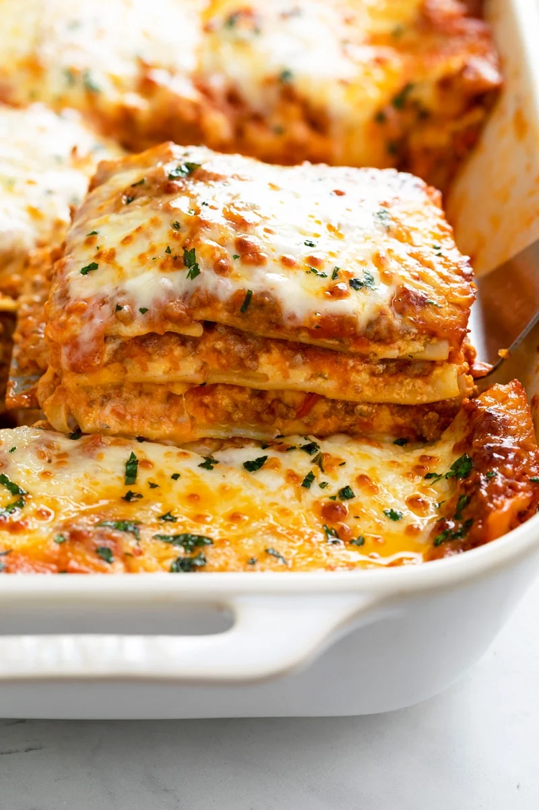

Lasagna

- 1-1.5LB ground beef
- 1 sm-med yellow onion, diced
- tomato sauce
- egg
- 1 cup water
- lasagna noodles
- ricotta, mozzarella, romano and parmesan cheese
- salt
- pepper
- dried oregano
- preheat oven to 375 degrees fahrenheit
- break apart ground beef in skillet over med-high heat, until no longer pink
- add in diced onion, dried oregano, salt and pepper. cook through until translucent
- add in tomato sauce and 1 cup water to the skillet, stir and bring to boil.
- meanwhile, in a small bowl combine ricotta cheese, 1TBS oregano, eggs, parmesan cheese, salt and pepper. Mix it well.
- in a 9x13inch baking dish add a couple ladles of the sauce to the bottom.
- lay 3 lasagna noodles over the meat sauce. next layer with ricotta mixture and about 1/2 cup mozzarella cheese
- repeat last step about 3 to 4 times. top with ricotta and mozzarella cheese.
- ENJOY!
Home